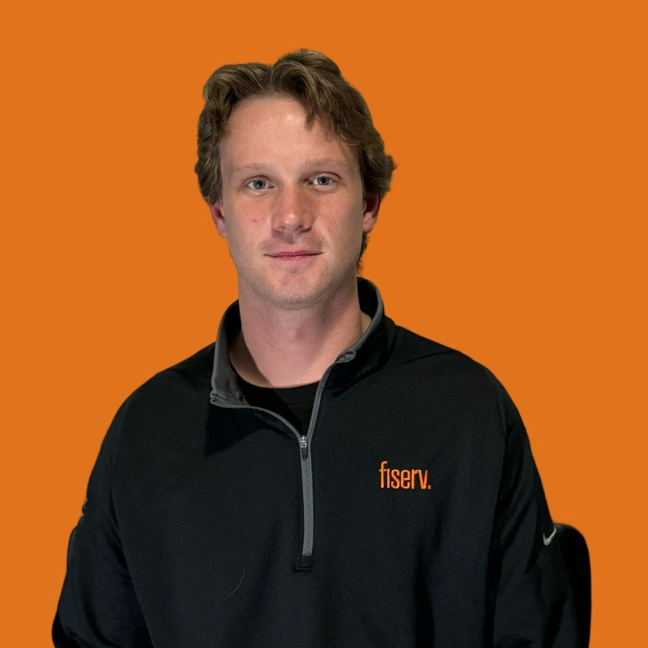

Nicholas Spell
Network Automation Engineer
Building software that automates complex infrastructure operations at enterprise scale.
Atlanta, GA
About Me
I am a network automation engineer specializing in Python-based automation, enterprise orchestration, APIs, and software systems for large-scale infrastructure operations.
I build tools that replace manual infrastructure processes with repeatable, observable, and scalable automation. Recent work has focused on enterprise network software management, automation platforms, and full-stack applications that coordinate thousands of infrastructure operations.
The emphasis is on engineering solutions to operational problems — not simply configuring networks.
Technical Skills
Languages & development: Python, Bash, AsyncIO, REST APIs, Django, Flask
Automation: Enterprise network automation, workflow automation, API integration, parallel execution, background processing, infrastructure orchestration
Networking: Cisco IOS, IOS-XE, NX-OS, F5 BIG-IP, Citrix / NetScaler, Palo Alto, Arista, Versa
Infrastructure: Linux, Docker, Kubernetes, Terraform, Git / CI/CD
Enterprise systems: ServiceNow, Splunk, Power BI, Nautobot, Rundeck
Featured Projects
Enterprise systems first. Earlier work is still on the projects page.
Latest Blog Post
Building SWIMv2: Automating Network Upgrades at Enterprise Scale
The story of moving from network scripting to a production automation platform — and what it takes to coordinate software upgrades across more than a thousand devices in one night.
Read ArticleExperience
Professional experience and education
Network Automation Engineer
Fiserv · Alpharetta, GA
July 2023 – Present
- Designed and helped lead development of SWIMv2, an enterprise network software image management and upgrade automation platform.
- Built automation capable of executing software image copy, staging, validation, and upgrades across 1,000+ devices in a single maintenance window.
- Helped dramatically reduce manual engineering and contractor effort, reducing millions of dollars in contractor and operational work.
- Developed a multi-vendor architecture supporting Cisco IOS, IOS-XE, NX-OS, Versa, F5, Citrix/NetScaler, Palo Alto, and Arista.
- Built full-stack workflows connecting the web application, backend services, enterprise orchestration, device connectivity, parallel execution, and change-management systems.
- Automated the ServiceNow change-management lifecycle — opening changes, updating them during execution, and closing them after successful completion.
- Implemented background orchestration for device reachability, validation, execution, monitoring, and parallel device operations.
- Served as a technical/product lead for SWIM: helping define the roadmap, break work into PBIs, coordinate contractor development, establish implementation patterns, and contribute directly to the codebase.
- Built a replacement network-access platform (Connect) with Linux/systemd services, ClearPass/TACACS+ authentication, session recording, and Splunk observability.
- Earlier in the role: Python SDKs for SD-WAN operations, Infrastructure as Code with Terraform and Docker, and reporting/visualization with Python and Power BI.
Client WAN Engineering Analyst
Fiserv · Alpharetta, GA
June 2021 – July 2023 · 2 yrs 1 mo
- Developed Python automation for network device monitoring and faster incident resolution.
- Built zero-touch provisioning workflows and configuration conversion from Cisco to Versa.
- This was the scripting-and-operations foundation that later became product work on SWIM and Connect.
Education
Georgia Southern University
B.S. Information Technology · Spring 2021
Certification: Cisco CCNA Automation (DEVASC 200-901)